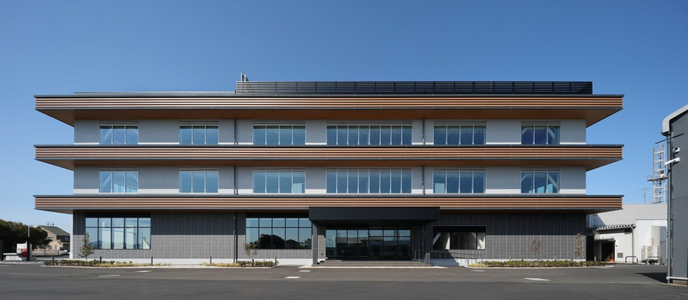

「介護される場所」から、「誇りを持って学び直す場所」へ。
シニアアカデミア YURU-RE:（ゆるり）は、従来の身体機能維持にとどまらず、**「大人の知的学び舎 ── 最終学歴の更新」**をコンセプトにした革新的な半日型デイサービスです。中海テレビ放送「千日前センタービル1階」を拠点に、地域の知的好奇心を刺激するコミュニティを展開します。
センビル進出ストーリー：2段階アプローチ
センビルの「ビル管理業務」を受託 ＆ 信頼構築
現在センビルのビル管理を行っている委託先から、まずはYURU'Qが緩やかに管理業務（日常受付・清掃・保守等）を引き受けます。中海テレビ様およびビル関係者との日常的な接点と強固な信頼関係を先行して構築します。
センビル1階に「シニアアカデミア」を開校！
構築した関係性を基盤に、1階の旧事務所フロアを活用してデイサービス「シニアアカデミア YURU-RE:」を正式開校。併設の「chukaiスマホ常設相談窓口」とともに、ビル全体の賑わい再生とシニア交流の拠点を実現します。
センビル外観 ＆ 1階間取り・フロアゾーニング図

中海千日前 センタービル
米子市中心市街地に位置し、視認性・アクセス抜群。1階フロアは前面道路からフラットにアクセス可能で、シニアの通所・来館に極めて適した立地です。
大人の知的学び舎 ＆ ゆるダン®︎機能訓練メイン空間
広々とした開放的フロア。可動式デスク＆チェアにより、「身体調律・ゆるダン®︎」と「知的講義・スマホ教室」を瞬時にスイッチ。
アカデミアを構成する3大提供プログラム
① 知的自立支援・カルチャー
「最終学歴の更新」を目指し、大学やカルチャースクールと連携した講義。スマホを活用した情報発信や知的好奇心を刺激するカリキュラム。
② 身体調律 ＆ ゆるダン®︎
音楽とリズムに合わせ、無理なく身体を動かす独自メソッド。看護師・機能訓練指導員と連携し、日常生活動作（ADL）の自立を支援。
③ 中海スマホ常設相談窓口
訪問サポート急増に悩む中海テレビ様の課題を解決する「来店型」一次相談窓口。シニアのデジタルデバイド解消とLTV最大化を両立。